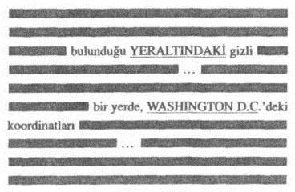
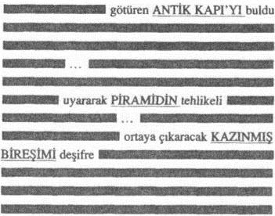

25. BÖLÜM
Tanrım. Katherine haklıydı. Her zamanki gibi.
Trish Dunne, karşısındaki plazma duvarda beliren arama örümceği sonuçlarına şaşkınlık içinde bakıyordu. Aramanın herhangi bir sonuç çıkaracağını bile sanmamıştı ama şimdi karşısında düzinelerce vardı. Ve sonuçlar akmaya devam ediyordu.
İçlerinden biri özellikle göze çarpıyordu.
Trish dönüp kütüphaneye doğru seslendi. “Katherine! Sanırım bunu görmek istersin.”
Böylesi bir arama örümceğini çalıştırmayalı birkaç yıl olmuştu. Bu akşam elde ettiği sonuçlarsa onu hayrete düşürmüştü. Birkaç yıl önce bu arama sonuç vermezdi. Ama artık dünyadaki taranabilir dijital materyaller, gerçek anlamda her şeyin bulunabileceği bir noktaya gelmişti. Anahtar kelimelerden bir tanesini Trish daha önce hiç duymamıştı... ama arama sonucunda o bile vardı.
Katherine kontrol odası kapısından koşarak geldi. “Ne buldun?”
“Bir sürü aday.” Trish, plazma duvarı gösterdi. “Bu dokümanların her birinde, kelimesi kelimesine senin anahtar sözcüklerin var.”
Saçlarını kulak arkasına atan Katherine listeye göz gezdirdi.
Trish, “Fazla heyecanlanmadan önce, bu dokümanlardan birçoğunun aradığın şey olmadığını söyleyeyim,” dedi. “Bunlara kara delik diyoruz. Dosya boyutlarına bak. İnanılmaz büyükler. Milyonlarca e-postadan oluşan sıkıştırılmış arşivler, dev ansiklopedi setleri, yıllardır süregelen forumlar ve benzerleri. Boyutlarına ve içeriklerinin çeşitliliğine bakarak, bu dosyaların herhangi bir arama motorunda, herhangi bir anahtar kelimeyi de içereceğini anlıyoruz.”
Katherine listenin başlarındaki sonuçlardan birini işaret etti. “Peki ya bu?”
Trish gülümsedi. Listedeki tek küçük boyutlu dosyayı bulan Katherine bir adım öndeydi. “İyi gözlerin var. Evet, bu gerçekten de şimdiye kadar karşımıza çıkan tek aday. Doğrusu bu dosya o kadar küçük ki, bir iki sayfadan fazlasını içermiyordur.”
“Aç.” Katherine’in sesi istekliydi.
Trish, tek sayfalık bir dokümanın Katherine’in verdiği tüm arama kriterlerini içerdiğine inanamıyordu. Ama yine de dokümanı tıklayıp açtığında... tüm anahtar sözcükler belirgin bir şekilde ve apaçık ortadaydı.
Katherine gözlerim plazma duvara sabitleyerek yanına yaklaştı. “Bu doküman... redakte mi edilmiş?”
Trish başını salladı. “Dijital metin dünyasına hoş geldin.”
Dijital ortama aktarılmış metinlerde, otomatik redaksiyon standart hale gelmişti. Redaksiyon işleminde sunucu, kullanıcının tüm metni aramasına izin veriyor, fakat sadece küçük bir kısmını gösteriyordu, yani bir tür iştah açıcıydı. Aranan anahtar kelimelerin sadece sağ ve sol yanlarındaki sözcükler okunabiliyordu. Metnin büyük bir kısmını atlayan sunucu telif haklarının ihlalinden kendini koruyor, kullanıcıya ilginç bir de mesaj gönderiyordu: Aradığın bilgi bende ama geri kalanını istiyorsan satın alman gerek.
İyice kısaltılmış olan sayfayı aşağı doğru indiren Trish, “Gördüğün gibi dokümanda anahtar sözcüklerin hepsi mevcut,” dedi.
Katherine sessizce önündeki dokümana baktı.
Trish, ona bir dakika tanıdıktan sonra yeniden sayfanın başına döndü. Katherine’in büyük harf çıkan anahtar sözcüklerinin altı çizilmiş ve her iki yanına iştah açıcı sözcükler eklenmişti.


Trish bu dokümanın neden bahsettiğini anlayamamıştı. Ve “bireşim” de ne halt demek?
Katherine heyecanla ekrana doğru yaklaştı. “Bu doküman nereden? Kim yazmış?”
Trish zaten bunun üstünde çalışıyordu. “Bana bir saniye ver. Kaynağını bulmaya çalışıyorum.”
Katherine sabırsızca, “Kimin yazdığını öğrenmek istiyorum,” dedi. “Geri kalanını da görmem gerek.”
Katherine’in sesindeki keskinliğe şaşıran Trish, “Deniyorum,” dedi. Dosyanın bulunduğu yer nedense alışılmış bir web adresi değil, sayısal bir İnternet Protokol adresi olarak gözüküyordu. Trish, “IP’yi bulamadım,” dedi. “Alan adı çıkmıyor. Bekle.” Uçbirim penceresini açtı. “Trace- route{39} işleteceğim.”
Trish kontrol odasındaki makineyle bu belgeyi saklayan makine arasındaki tüm “atlamaları” kontrol etmek için bir dizi komut girdi.
Komutu çalıştırırken, “Şimdi izlemeye başladı,” dedi.
Traceroute’lar son derece hızlıydı. Uzun bir bilgisayar ağı aygıttan listesi plazma duvarda hemen belirdi. Trish kendi makinesiyle diğeri arasındaki yönlendirici ve anahtarların izlediği yolu aşağı doğru taradı... taradı...
Bu da ne? Takibi, dokümanın bulunduğu sunucuya erişemeden sona ermişti. Yardımcı takip programı bir sebepten ötürü, ping’i geri döndüreceğine yutan bir ağ aygıtına rastlamıştı. Trish, “Galiba traceroute’um engellendi,” dedi. Bu mümkün mü?
“Bir daha çalıştır.”
Trish yeni bir traceroute çalıştırdı, ama aynı sonucu aldı. “Yok. Çıkmıyor. Galiba bu doküman takip edilemeyen bir sunucuda.” Sonuncudan önceki birkaç atlamaya göz gezdirdi. “Ama yine de D.C. bölgesinde bir yerde olduğunu söyleyebilirim.”
“Şaka yapıyorsun.”
Trish, “Bunun şaşılacak tarafı yok,” dedi. “Bu örümcek programları coğrafi olarak yayılırlar, yani ilk çıkan sonuçlar her zaman yereldir. Ayrıca arama kriterlerinden biri ‘Washington D.C.’ idi.”
Katherine, “Peki ‘who is’{40} araması yapsak?” diye sordu. “Alan adı sahibini göstermez mi?”
Biraz basit ama fena fikir değil. “Who is” veritabanına giren Trish, şifrelendirilmiş numaraları gerçek bir alan adıyla eşleştirebilmek umuduyla IP’yi aradı. Boşuna uğraştığı düşüncesine şimdi bir de merak eklenmişti. Bu doküman kimde? Hemen ekrana gelen “who is” sonuçları hiçbir eşleştirme yapılmadığını gösteriyordu. Trish yenilgiye uğramış gibi ellerini havaya kaldırdı. “Sanki böyle bir IP adresi yok. Bununla ilgili hiçbir bilgi alamıyorum.”
“Ama bu IP’nin var olduğu belli. Orada saklanan bir belgeye ulaştık!” Doğru. Ama bu doküman her kimdeyse, kimliğini açıklamak istemediği anlaşılıyordu. “Sana ne söyleyeceğimi bilemiyorum. Aslında sistem takibi benim işim değil. Korsanlıktan anlayan birini bulmazsan benim yapacak bir şeyim kalmadı.”
“Tanıdığın biri var mı?”
Trish dönüp patronuna baktı. “Katherine, şaka yapıyordum. Bu iyi bir fikir değil.”
“Ama yapılıyor, öyle değil mi?” Saatine baktı.
“Ee, evet... her zaman. Teknik olarak çok kolaydır.”
“Kimi tanıyorsun?”
“Korsan mı?” Trish ürkek bir kahkaha attı. “Eski işimde çalışanların yarısını.”
“Güvenebileceğin biri var mı?”
Katherine ciddi mi? Trish, onun son derece ciddi olduğunu anlamıştı. Elemen, “Şey, evet,” dedi. “Arayabileceğimiz birini tanıyorum. Sistem güvenliği uzmanımızdı, bir bilgisayar dâhisidir. Benimle çıkmak istemişti ama o iş olmadı, iyi biridir. Ona güvenirim. Ayrıca serbest çalışır.”
“Sır saklayabilir mi?”
“O bir korsan. Elbette sır saklayabilir. Bu işi yapıyor. Ama eminim sırf bakmak için bile birkaç bin dolar ister...”
“Onu ara. Hızlı sonuç alırsa iki katını vereceğimizi söyle.”
Trish hangisinden daha fazla rahatsızlık duyduğuna karar veremiyordu: Katherine Solomon’ın korsan tutmasından mı, yoksa kızıl saçlı, tıknaz bir metasistem uzmanı tarafından romantik talebinin geri çevrildiğine inanmakta güçlük çeken bir adamı aramaktan mı? “Emin misin?”
Katherine, “Kütüphanemdeki telefonu kullan,” dedi. “Numarası gizli. Ve tabii ismimi verme.”
“Tamam.” Trish tam kapıya yönelmişti ki, Katherine’in iPhone’unun çaldığını duydu. Eğer şansı varsa, gelen mesaj Trish’i bu nahoş işi yapmaktan kurtarabilirdi. Katherine’in laboratuvar önlüğünün cebinden iPhone’u çıkarıp, ekrana bakmasını bekledi.
Katherine Solomon, telefonun ekranındaki ismi görünce rahatladığını hissetti.
Sonunda.
PETER SOLOMON
Trish’e yan gözle bakıp, “Ağabeyimden mesaj gelmiş,” dedi.
Trish ümitlenmişti. “Acaba bilgisayar korsanını aramadan önce... ona bunlardan bahsetsek daha mı iyi olur?”
Plazma duvardaki redakte edilmiş dokümana bakan Katherine, Dr. Abaddon’ın sesini duydu. Ağabeyinizin D.C.’de saklandığına inandığı şey... bulunabilir. Katherine artık neye inanacağını bilmiyordu. Ama bu doküman, Peter’ın tutkusu haline gelen uçuk fikirlerle ilgili bilgiler içeriyordu.
Katherine başını iki yana salladı. “Bunu kimin yazdığını ve nerede olduğunu bilmek istiyorum. Ara.”
Trish kaşlarını çatıp kapıya yöneldi.
Bu doküman, ağabeyinin Dr. Abaddon’a anlattıklarının gizemini açıklasa da. açıklamasa da bugün en azından bir gizem çözülmüştü. Ağabeyi sonunda iPhone’un kısa mesaj gönderme özelliğini kullanmayı öğrenmişti.
Trish’in ardından, “Ve medyaya haber ver,” diye seslendi. “Büyük Peter Solomon ilk kısa mesajını gönderdi.”
SMSC’nin karşı tarafındaki yeşillikli bir otoparkta, Mal’akh limuzininin yanında durmuş telefonunun çalmasını beklerken kollarını ve bacaklarını esnetiyordu. Yağmur durmuş, bulutların arasından Ay görünmeye başlamıştı. Bir süre önceki ikaf töreni{41} sırasında Mabet Evi’nin kubbeli tavanındaki yuvarlak delikten aşağı ışıkları süzülen yine aynı Ay’dı.
Dünya bu akşam bir başka görünüyor.
Beklerken karnı yeniden guruldadı. İki gündür tuttuğu oruç rahatsızlık verici olsa da hazırlandığı şey için gerekliydi. Antik kurallar böyle gerektiriyordu. Yakında tüm fiziksel rahatsızlıklar önemsiz kalacaktı.
Mal’akh soğuk akşam havasında dururken, kaderin onu manalı bir şekilde, küçük bir kilisenin karşısına getirdiğini görünce kendi kendine güldü. Burada, Sterling Dişçilik ile küçük bir marketin arasında ufak bir kilise vardı.
İSA’NIN NUR EVİ
Mal’akh kilisenin düsturunun yazılı olduğu pencereye baktı:
İSA’NIN KUTSAL RUHTAN VÜCUDA GELDİĞİNE, BAKİRE MERYEM’DEN DOĞDUĞUNA VE HEM İNSAN, HEM DE TANRI OLDUĞUNA İNANIYORUZ.
Mal’akh gülümsedi. Evet, İsa gerçekten her ikisi birden -insan ve Tanrı- ama ilahi olmak için bakireden doğmak gerekmez. Bu işler böyle olmuyor.
Çalan cep telefonu akşam sessizliğini bölerek nabzını hızlandırdı. Şimdi çalan, Mal’akh’ın kendi telefonuydu; dün satın aldığı, kullandıktan sonra atılan ucuz bir telefon. Aramayı yapanın kimliği, beklediği çağrının geldiğini gösteriyordu.
Yerel bir çağrı, diye düşünen Mal’akh, Silver Hill Yolu’nun karşısında, zayıf ay ışığının aydınlattığı zikzak çatılara baktı. Telefonun kapağını açtı. Sesini boğuklaştırarak, “Ben Dr. Abaddon,” dedi.
Kadın sesi, “Ben Katherine,” dedi. “Sonunda ağabeyimden haber aldım.” “Ah, rahatladım. Nasılmış?”
“Şu anda laboratuvarıma geliyor. Sizin de bize katılmanızı istemiş.” “Anlayamadım?” Mal’akh yalandan tereddüt ediyormuş gibi yaptı. “Laboratuvarınıza mı?...”
“Size çok güveniyor olmalı. Buraya hiç kimseyi davet etmez.” “Herhalde bu ziyaretin tartışmalarımıza yardımcı olacağını düşündü ama kendimi zorla davet ettirmiş gibi hissedeceğim.”
“Ağabeyim gelmenizden memnuniyet duyacaksa ben de duyarım. Ayrıca ikimize de anlatacak çok şeyi olduğunu söylemiş. Ben de neler olduğunu en ince ayrıntısına kadar öğrenmek istiyorum.”
“Peki o zaman. Laboratuvarınız tam olarak nerede?”
“Smithsonian Müzesi Destek Merkezi’nde. Yerini biliyor musunuz?” Otoparkın karşısındaki tesise bakan Mal’akh, “Hayır,” dedi. “Şu anda arabamdayım ve navigasyon sistemim var. Adres nedir?”
“Kırk-iki-on, Silver Hill Yolu.”
“Tamam, bekleyin. Yazayım.” On saniye bekledikten sonra, “Ah, haberler iyi, sandığımdan daha yakınmışım. GPS on dakika mesafede olduğumu söylüyor.”
“Harika. Güvenliği arayıp geleceğinizi haber vereyim.” “Teşekkürler.”
“Görüşmek üzere.”
Kullanılıp atılan telefonunu cebine koyan Mal’akh, SMSC’ye doğru baktı. Kendimi davet ettirmekle kabalık mı ettim? Gülümserken, Peter Solomon’ın iPhone’unu çıkardı ve dakikalar önce Katherine’e göndermiş olduğu kısa mesaja hayranlıkla baktı:
Mesajlarını aldım. Her şey yolunda. Dr. Abaddon’la randevuyu unutmuşum. Ona daha önce bildiremediğim için üzgünüm.
Uzun hikâye. Müsaitse Dr. Abaddon içeride bize katılsın. Ona güvenim tam ve her ikinize de anlatacak çok şeyim var. -Peter
Beklediği gibi şimdi Peter’ın iPhone’una da Katherine’den cevap mesajı gelmişti.
Peter, mesaj göndermeyi öğrendiğin için tebrikler! İyi olman beni rahatlattı. Dr. A. ile konuştum, laboratuvara geliyor. Görüşürüz! -K.
Solomon’ın iPhone'unu kavrayan Mal’akh, limuzinin yanında çömelerek, telefonu ön tekerlekle kaldırım arasına sıkıştırdı. Bu telefon, işine fazlasıyla yaramıştı... ama artık takip edilemez olmasının vakti gelmişti. Direksiyonun başına geçip, vitesi taktı ve iPhone’un çatırdadığını duyuncaya kadar aracı sürdü.
Arabayı yeniden park yerine çeken Mal’akh, SMSC’nin uzaklardaki siluetine baktı. On dakika. Peter Solomon’ın geniş deposunda otuz milyondan fazla hazine vardı, ama Mal’akh bu akşam sadece en değerli iki şeyi yok etmeye gelmişti.
Katherine Solomon’ın tüm araştırmaları.
Ve Katherine Solomon’ın kendisi.